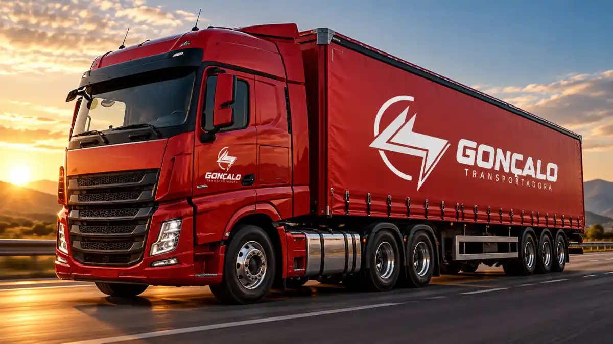
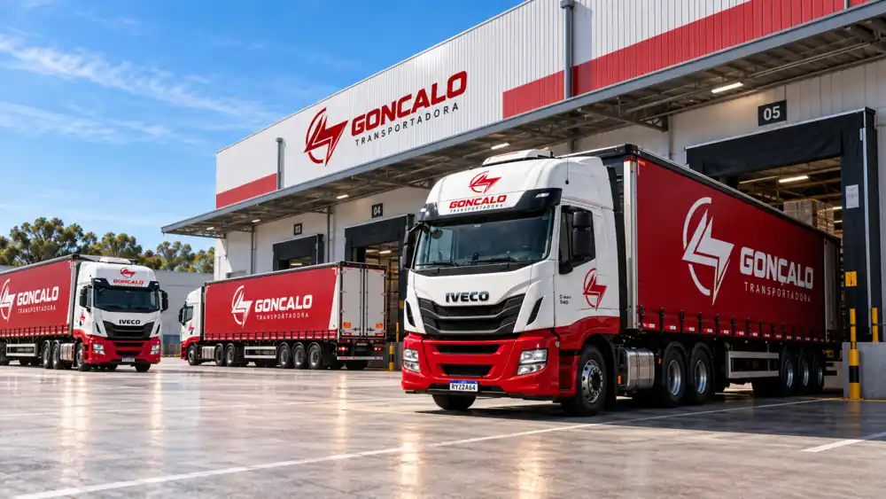

01
Transporte de cargas
Materiais de construção, equipamentos e outras cargas, mediante análise da operação.
Solicitar cotação →TRANSPORTE DE CARGAS NO NORDESTE
Atendimento para empresas e pessoas físicas em todo o Nordeste, com maior atuação em Pernambuco. Transporte de cargas, coleta no endereço e operações interestaduais com comunicação próxima em cada etapa.

SERVIÇOS
A operação é avaliada conforme carga, rota, dimensões, peso e prazo para indicar a solução adequada.
Materiais de construção, equipamentos e outras cargas, mediante análise da operação.
Solicitar cotação →Atendimento a empresas com demandas frequentes e canal direto com a transportadora.
Planejar operação →Rotas entre cidades e estados do Nordeste, conforme disponibilidade e características da carga.
Consultar rota →A coleta pode ser realizada no endereço informado e integrada à programação da operação.
Solicitar coleta →PARA COTAR MAIS RÁPIDO
A equipe consulta motoristas disponíveis e identifica o veículo adequado antes de retornar com o orçamento.
VEÍCULOS
A escolha é feita conforme peso, dimensões, rota e disponibilidade.
Demandas menores, conforme avaliação da carga.
Operações compactas e cargas compatíveis.
Cargas que exigem uma operação intermediária.
Operações de maior porte, conforme necessidade.
Demandas que exigem veículos de grande porte.
Capacidade e disponibilidade são confirmadas durante a cotação.

POR QUE A GONÇALO
Quatro pontos orientam a experiência do cliente: atendimento de excelência, facilidade de comunicação, transparência e suporte em imprevistos.
COMO FUNCIONA
O fluxo segue a forma de atendimento informada pela empresa.
Origem, destino, carga, peso, dimensões, volumes e prazo.
Motoristas disponíveis são consultados e o veículo ideal é definido.
A cotação é apresentada para aprovação e alinhamento das condições.
Após o aceite, a operação é programada e acompanhada pela equipe.
SOBRE A GONÇALO
A Gonçalo Transportadora atende empresas e pessoas físicas em todo o Nordeste, com maior campo de atuação em Pernambuco. A operação é estruturada a partir da necessidade de cada cliente.
Mais do que movimentar materiais, a proposta é manter o cliente informado, facilitar a comunicação e prestar suporte quando houver qualquer imprevisto.
INFORMAÇÕES RÁPIDAS
Dados confirmados pela empresa no briefing.
Sim. A Gonçalo atende os dois perfis.
Sim, por atualizações da equipe via WhatsApp, ligação e contato direto.
Depende do serviço e da carga; a condição é confirmada na cotação.
Sim, conforme os dados informados na solicitação.
SOLICITE UMA COTAÇÃO
Ao enviar, o site abre uma mensagem organizada no WhatsApp oficial.